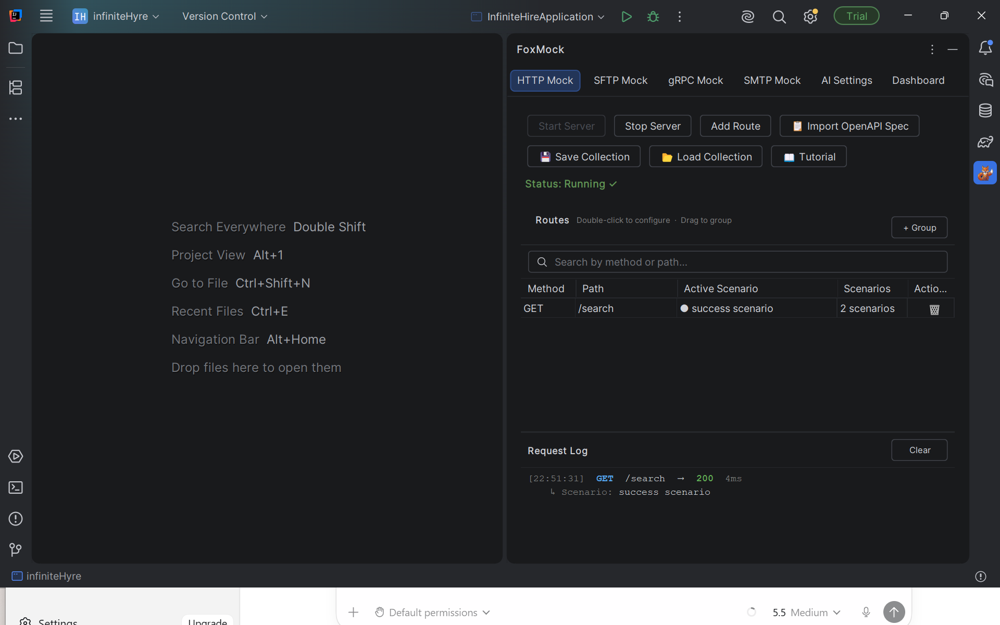

No server. No Docker. No context switching.
Four protocols, one plugin — start mocking in under 60 seconds.
Testing a feature that depends on a service you don't own is painful — until now.
Waiting for an API that isn't ready yet means you can't test your integration at all.
Switching between your IDE, Postman, WireMock config files, and a terminal kills focus.
Spinning up a container to mock one gRPC method is massive overhead for a simple test.
FoxMock runs a real mock server in the IntelliJ tool window. Your app can't tell the difference.

Built for developers who want to test fast without leaving their IDE.
Mock any endpoint in seconds. Set the method, path, status code, headers, and JSON body. Supports wildcards and regex routes.
GET · POST · PUT · DELETE · PATCHDrop in a .yaml or .json OpenAPI spec and FoxMock instantly creates all routes with pre-populated scenarios for every response code defined in the spec.
Load a .proto file and FoxMock auto-discovers all services and methods. Returns JSON-transcoded responses just like a real server.
Simulate a full SFTP server with configurable file listings, upload and download responses. Test file-transfer workflows without SSH keys or a real server.
Upload · Download · List · StatCapture outbound emails from your app without sending a single real message. Inspect subject, headers, and body in the transaction log — perfect for testing email flows.
Capture · Inspect · Headers · BodyDefine named scenarios per method: success, error, slow response. Switch the active scenario with one click — no code change, no restart.
● Active · ⚡ Conditional · DisabledMatch on request body content with JSONPath, regex, or exact comparisons. The right scenario is served automatically based on what the caller sends.
JSONPath · Regex · Exact MatchGenerate realistic mock data using OpenAI, Claude, Ollama, or any local CLI. Field names are inferred — email gets an email, id gets a UUID.
OpenAI · Claude · Ollama · Local CLIPersist your entire mock setup to a .foxmock or .foxmock-grpc JSON file. Commit it to git — the whole team loads the same config in two clicks.
Every request is logged with method, path, matched scenario, status code, and duration. Confirm your app is hitting the mock and debug mismatches instantly.
Real-time · Scenario matched · DurationAdd artificial delay to any scenario in milliseconds. Reproduce slow network conditions and timeout edge cases without a VPN or a flaky external service.
Per-scenario delay · 0–∞ msRuns entirely inside IntelliJ on a single port. No Node.js, no Docker, no WireMock JAR. Install the plugin and you're done.
localhost · Configurable portSearch FoxMock in the JetBrains Plugin Marketplace and click Install.
Open the FoxMock tool window, add a route or load a .proto file, set your response.
Click Start Server. FoxMock starts each protocol on its own configurable port — HTTP, gRPC, SFTP, and SMTP simultaneously.
Point your client at FoxMock. It responds exactly like the real service would.
Create named scenarios for each endpoint — happy path, error, timeout, edge case. Switch between them instantly without editing code or restarting anything.
Combine with conditional matching to serve different scenarios based on what the request contains — automatically.
Learn about Scenarios →Write match conditions on request body content. When a request matches, FoxMock routes to that scenario — no manual switching needed in automated tests.
Use JSONPath to drill into nested fields, regex for flexible patterns, or exact body matching for strict assertions.
Learn about Conditions →Free during beta. No credit card. No sign-up. Just install and go.
Works with IntelliJ IDEA, Android Studio, and all JetBrains IDEs